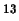
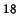
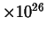
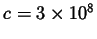
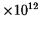
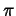
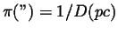
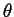

Next: About this document ...
Review and Discussion of Ch. 1: Charting the Heavens
- Compare the size of Earth with that of the Sun, the Milky Way
Galaxy, and the entire universe.
- The diameters of the Earth and Sun are about 13000 km and
12,800,000 km,
- The diameters of the Milky Way the the universe are 100,000 ly,
and 26,000,000,000 ly.
- The ly is about 1x10 km.
- So the M.W. and universe are 1x10, and 2.6
 km.
- The diameters can now be compared in km to the nearest power of 10: 4, 7, 18, and 26
for the Earth, Sun, Milky Way, and universe, respectively.
- What does an astronomer mean by ``the universe?".
- Usually, they mean the observable universe, which is everything within about 13.7 billion ly.
(We cannot observe things beyond this distance because light has only travelled that far since the big bang.)
- Or, they mean everything - all space, matter and energy.
- How big is a light-year?
- It is the distance light travels in a year.
- The speed of light is
m/s, or 186,000 miles/sec.
- So 1 ly = 5.87
 miles, or 9.46
km
- What is a constellation?
- A recognizable pattern of stars.
- A well-defined region in the sky, usually have
boarders that are parallel to lines of right ascension and declination.
- The better word for ``a recognizable pattern of stars" is
asterism.
- Many asterisms are NOT constellations, e.g., the Big Dipper,
the Littler Dipper, the Northern Cross, the Pleiades, and the Hyades. These
are all asterisms located WITHIN the constellations: Ursa Major, Ursa,
Minor, Cygnus, Taurus, and again Taurus.
- Every star in the sky belongs to one, and only one
constellation.
- Why are constellations usefull for mapping the sky?
- Because every spot of the sky is included inside of a
constellation , and
- Because at the center of almost all constellations is
a recognizable, internationally known pattern of stars.
- Why does the Sun rise in the east and set in the west each day?
Does the Moon also rise in the east and set in the west? Why? Do stars
do the same? Why?
- The Sun, the Moon, and the stars all rise in the east
and set in the west because the Earth rotates once in 24 hours.
- The Earth rotates such that its surface moves
toward the east. Consequently, a feature on the celestial sphere appears
to move toward the west.
- If an object moves over 15 ^/hour eastward relative to the
celestial sphere, it could rise in the West and set in the East.
- Geostationary satellites move at
 15 ^/hour eastward
so that they never rise or set.
15 ^/hour eastward
so that they never rise or set.
- How and why does a day measured by the Sun differ from a day
measured by the stars?
- The Earth is revolving around the Sun by 1 ^ per day
at the same that it rotates.
- The day (or the mean solar day) is the average time it
takes for the Earth to rotate once relative to the Sun. (E.g., the average
time between one noontime and the next.)
- In the time it takes Earth to rotate once relative to the
stars (i.e., the sidereal day), it also revolves 1 ^ around the
Sun. So Earth must rotate 1 degree more to line up with the Sun.
- Consequently, it takes more time for the Earth to rotate
relative to the Sun, than to the stars.
- The mean solar day is longer by 3 min 56 sec.
- Our units of time, the hour, minute and second, are all
subdivisions of the mean solar day.
- How many times in your life have you orbited the Sun?
- This is your age.
- If you were born in December, 1980, it would be 23 orbits.
- If you were born in June, 1980, it would be 23.5 orbits.
- Why do we see different stars at different times of the year?
- Actually, we see different stars at different times of
the night. Instead, consider a specific time, like midnight. Why do
we see different stars during midnight at different times of the year?
- Ans: at midnight we see the stars that are 180
^
away from the Sun. Since the Sun appears to move relative to the stars,
the point opposite the Sun will also line up with different constellations
as time goes on.
- Why are there seasons on Earth?
- If the seasons are an oscillation of temperature with a
period of 1 year, then the seasons are caused by two main factors:
- The varying directness of the rays of the noontime Sun.
- The varying length of the day.
- Both of the above are, in turn, caused by the 23.5^ tilt of the Earth's axis relative to a line perpendicular to the
Earth's orbital (ecliptic) plane.
- During the Northern hemisphere summer, the days are
long and the Sun reaches a high altitude at noon.
- During the Northern hemisphere winter, the days are
short and the Sun reaches a low altitude at noon.
- On Jan 4, during the Northern hemisphere winter, the distance
between the Earth and Sun is minimum.
- What is an equinox?
- A position in the sky where the ecliptic intersects
the celestial equator. These are assigned equatorial coordinates
of RA=0 h, DEC=0^ (vernal equinox), and RA=12 h, DEC=0 degrees (autumnal).
- One of the moments during the year when the center of
the Sun passes a point of intersection of the ecliptic with the
celestial equator.
- What is precession, and what causes it?
- The wobbling of the Earth's spin axis, or ...
- the wobbling of the celestial equator relative
to the ecliptic.
- You can't change the celestial poles without
changing the celestial equator
- Precession is caused by a torque. In the
case of the Earth, the Moon and Sun exert more force on the near
part of Earth's equatorial bulge than the far part.
- If one complete hemisphere of the Moon is always lit by the
sun, why do we see different phases of the Moon?
- Because we can't always see all of the
illuminated portion of the Moon. During new moon, the
lit portion faces away from us, during full moon
the lit portion faces towards us.
- What causes a lunar eclipse? A solar eclipse?
- lunar eclipse: when the
Earth's shadow passes over the Moon
- total lunar eclipse
- partial lunar eclipse
- penumbral lunar eclipse
- solar eclipse: when the Moon's shadow
falls on the Earth.
- total solar eclipse
- partial solar eclipse
- annular solar eclipse
- Shadowcone structure: umbra is darkest, penumbra
less dark.
- Why aren't there lunar and solar eclipses every month?
- The Moon's orbit occupies a plane that is tilted
at about 5 ^ with respect to the Ecliptic plane.
- The intersection of those two planes is called
the line of nodes.
- During most new moons, the Moon will pass above or
below the Sun.
- During most full moons, the Moon will pass above or
below the Earth's shadow.
- If the line of nodes is pointed near the Sun
during a new or full moon, then a solar or lunar eclipse will occur, respectively.
- Do you think an observer on another planet might see eclipses?
Why or why not?
- Yes they could, if the planet has moons.
- If the planets equatorial plane is nearly aligned
with its orbital plane, like Jupiter's, then you could have a
situation where solar eclipses only occur near the equator of
the planet.
- Just as on Earth, the observation of a solar
eclipse from a fixed point on the planet would be more rare
than observing the planet's shadow crossing a moon.
- What is parallax? Give an everyday example.
- The apparent change of an object's position caused by
the motion of the observer.
- Everyday: the thumb held at arms length will appear
to jump back and forth relative to a background wall as
we blink from left to right eye.
- Stellar parallax: the apparent change of
a stars position caused by the motion of the Earth around the
Sun. The parallax is often an angle in arcseconds.
- Stellar parallax,  is inversely related to
the distance of the star,
.
- The unit parsec comes from ``parallax second".
- Why is it necessary to have a long baseline when using
triangulation to measure the distances to objects in space?
- The longer the baseline, the larger the parallax
angle. Stars are so far away, that the baseline of 2 AU only
makes parallaxes less than 1. 1 is about the size of
a star's image caused by the blurring of the atmosphere.
- What two pieces of information are needed to determine the
diameter of a faraway object?
- It's distance,, and the angle it subtends,
(i.e., its angular diameter).
- These things are related as follows:
- If you traveled to the outermost planet in our solar system,
do you think the constellations would appear to change their shapes?
What would happen if you traveled to the next-nearest star? If you
traveled to the center of our Galaxy could you still see the familiar
constellations found in Earth's night sky?
- The constellations would not look different from, say, Pluto.
- The constellations would begin changing perceptibly
as you traveled to nearby stars.
- The constellations would look completely different
from the center of our Galaxy.
Next: About this document ...
Jason Pinkney
2003-12-18